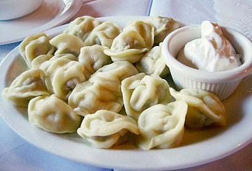

Логотип
HOT PELMEN
Происхождение и этимология
Русское слово пельмени является заимствованием из пермских языков: коми, удм. пельнянь «хлебное ухо»: пель «ухо» + нянь «хлеб». Форма пельмень образовалась под влиянием севернорусского наречия, через которое слово попало в литературный язык. Уральские диалектные формы пермяни, пермени образовались в результате народно-этимологического сближения со словом Пермь. Некоторые популярные или устаревшие этимологические словари указывают в качестве источника «финно-угорские языки» в целом, мансийский и финский языки. В. В. Похлёбкин считал, что пельмени пришли в русскую кухню с Урала в конце XIV — начале XV веков. В русских письменных документах уральских населённых пунктов XVII—XVIII веков (с 1679 года) встречаются фамилии, образованные от слова «пельмени»: Пельменев, Пелненев, Пельменников. Историк П. А. Корчагин на основе анализа упоминаний «пельменных» фамилий в документах отметил, что в верхнем Прикамье в 1579 году ещё не было людей, которые зарабатывали изготовлением пельменей. Наиболее вероятным путем попадания пельменей на Урал является заимствование у традиционной кухни кочевых народов (например, сибирских татар, киргизов) и в ходе переселения финно-угорских народов из Сибири на Урал и в Европу. Пельмени в традиционной культуре не были обрядовым блюдом и готовились по праздникам — при встрече гостей и в заговенье. Туристическая индустрия Удмуртии пытается закрепить за регионом статус «родины пельменей». С 2015 года в республике проходит праздник «Всемирный день пельменя». В рамках рекламных компаний и маркетинговых акций крупных производителей готовых пельменей часто употребляется название «Сибирские пельмени» для позиционирования продукции в премиальном ценовом сегменте. При этом для рецепта сибирских пельменей характерно сочетание в качестве начинки смеси фарша из говядины и свинины.
bot